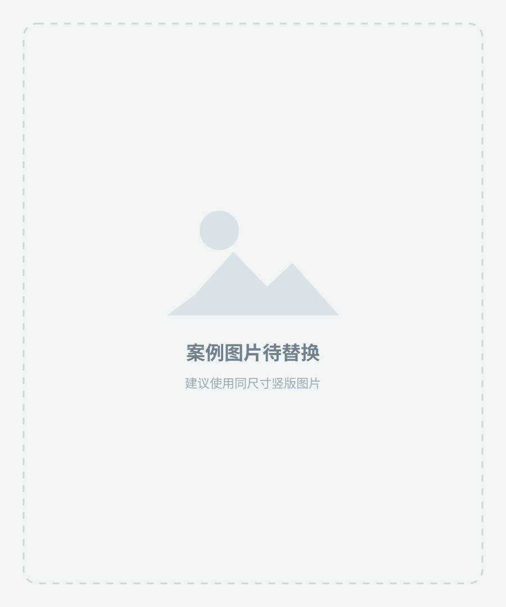

换模特
欧美、拉美、非裔、年轻轻商务、成熟商务或多元人群。
用于市场本地化与人群差异化AI视觉优化
保持商品颜色、版型、面料和结构不变，通过更换模特、姿势、背景与视觉风格，低成本提高图片丰富度，为同款、复色和不同市场快速制作可测试的视觉版本。
先确定本次只改变哪一类内容，再逐步增加变量。
欧美、拉美、非裔、年轻轻商务、成熟商务或多元人群。
用于市场本地化与人群差异化自然站立、轻微侧身、行走、整理袖口、单手插袋或坐姿。
减少重复构图，弱化刻板感办公室、城市通勤、酒店大堂、婚礼宴会、咖啡馆或度假空间。
帮助消费者建立穿着联想经典正式、轻商务、婚礼宴会、夏季轻量、复古绅士或运动混搭。
让同款适配不同趋势方向不要孤立地选择模特或背景，按商品定位组合成完整方向。

成熟欧美男模 · 正面站立／整理袖口 · 浅灰棚拍／现代办公室
适合深色西装、标准套装年轻多元男模 · 行走／单手插袋 · 城市建筑／办公走廊
适合休闲西装、西裤、衬衫拉美男模 · 自然站立／轻松交流 · 暖色城市／咖啡馆
适合衬衫、套装、马甲成熟男模 · 侧身／整理门襟 · 酒店／简洁宴会环境
适合三件套、马甲、礼服年轻男模 · 放松站姿／行走 · 明亮建筑／度假空间
适合轻量套装、短袖衬衫成熟男模 · 倚靠／坐姿 · 木质空间／复古酒店
适合格纹套装、马甲不必每张都重新拍摄，建议组合基础图、差异化人模图、场景图与真实细节图。
图片暂用空白图占位；替换时保留“底图—改变内容—结果”的统一结构。
保留：商品颜色、版型、扣数、口袋和纹理。
改变：模特人群、自然姿势与人物气质。
适用：同款视觉差异化、目标市场本地化。
保留：人物、服装、姿势与光线逻辑。
改变：办公室、城市、酒店或度假背景。
适用：扩展轮播图，强化使用场景联想。
保留：真实商品与所有可售卖信息。
改变：搭配、姿势、背景和整体视觉调性。
适用：商务休闲、复古绅士、夏季轻量等方向。
先复制固定保护语，再添加本次允许改变的内容。
保持原图商品完全不变，包括颜色、面料纹理、纹样大小和方向、版型、领型、驳领、纽扣数量、门襟、口袋、袖口、衣长、裤型和缝线。不得添加实物不存在的设计、配饰、标志和功能。本次只允许修改指令明确要求的内容。
将模特调整为年轻拉美男性模特，姿势改为自然行走，背景改为现代城市商务街区，呈现轻商务通勤风格。商品清晰完整，背景适度虚化，不遮挡领型、门襟、腰头和其他主要结构。
AI只负责视觉表达，最终图片是否符合实物仍由商家确认。